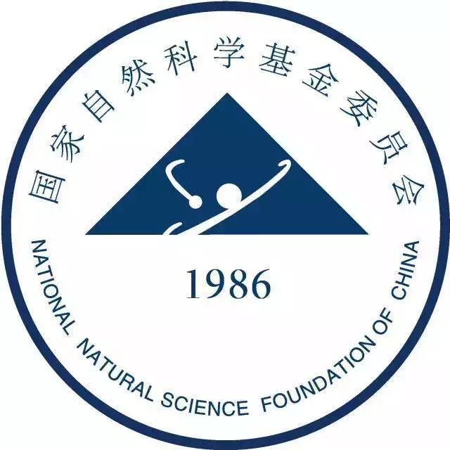

| Home | Registration | Program | Directions | Flyer |
The workshop is an informal research conference focusing on interactions of 3 and 4D topology. This event features a series of three lectures given by Mark Powell (University of Glasgow) on 4D topology and 14 one-hour talks on recent trends.
Two major breakthroughs made by Donaldson and Freedman in the early 1980s revealed a profound distinction between smooth 4-manifolds and topological 4-manifolds. Their work opened floodgates to the study of 4-manifolds in various categories (topological, smooth, symplectic). Over the last two decades, 4-manifold topology and 3-dimensional topology have become closer than ever. Many exciting research directions have emerged: Various Floer theory for 3-manifolds and knots have been developed; new invariants and obstructions regarding embedding surfaces in 4-manifolds have been introduced; deeper connection to symplectic geometry and quantum topology have been discovered; a better understanding of topology of the diffeomorphism and homeomorphism groups are being resembled; and a program to explore possible role of the Ricci flow in 4-manifolds has been initiated. This workshop will bring together experts working on these areas around the world. We hope the workshop will serve as a platform for reporting on recent progress and exchanging ideas to foster new interactions.
Online participation will be open to all who register. Due to limited capacity, mathematicians who have not received an official invitation containing a Zoom meeting code will not be permitted to join the event.
John Baldwin (Boston College)
Yuanyuan Bao (University of Tokyo)
Ryan Budney (University of Victoria)
Bennett Chow (University of California, San Diego)
Kyle Hayden (Rutgers University)
Tian-jun Li (Unversity of Minnesota)
Ciprian Manolesu (Stanford University)
Maggie Miller (Stanford University)
Yu Pan (Tianjing University)
Mark Powell (University of Glasgow)
Yang Su (Chinese Academy of Sciences)
Kang Sungkyung (IBS Center for Geometry and Physics)
Tadayuki Watanabe (Kyoto University)
Shijie Gu (Northeastern University)
Jianfeng Lin (Tsinghua University)
Yi Xie (Peking University)
|  |